ESC101/102 - Praxis I & II
Table of Contents
University of Toronto
Instructors: Prof. Jason Foster and Prof. Robert Irish
Praxis I and II are engineering design courses taken by Engineering Science students during first year. Through the coursework, students develop engineering thinking skills as the engineering design process. It gives an opportunity for students to incorporate the math and sciences they learned in other courses into making something useful.
Praxis I
Phase 1: Teardown
Praxis I begins with the teardown of two home use electronic devices / appliances of the student's choice. By tearing down these objects, the students can learn about how its components come together to make the device work. The students also learned how to research standards, guidelines, and engineering handbooks to help explain why this device is designed in such a manner.
In my case, I chose to tear down an electronic toaster and a colour printer.


Teardown of the electric toaster (left) and colour printer (right)
As an engineer, it is important to learn about how different things work, especially when framing a problem. It is impossible determine the issues within a system, or the causes of an issue if one does not know how the system works in the first place. In addition, the observations made during the teardown, as well as the research of standards and guidelines, can help one understand why a design decision is made, and what function the device is designed for ("Design for X", X standing for a function such as safety, usability, etc.). All of this is important for understanding a problem, thus it is a crucial part of the framing process in engineering design.
Phase 2: Designing a solution for a campus service provider
 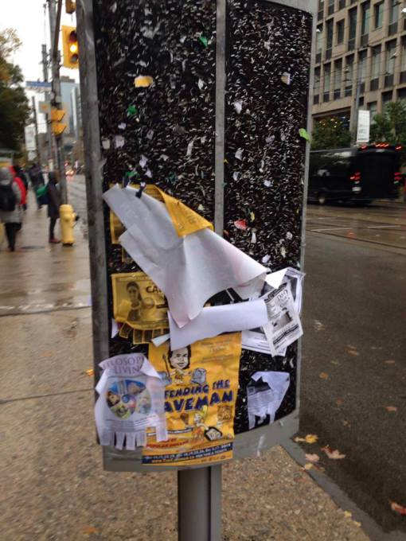
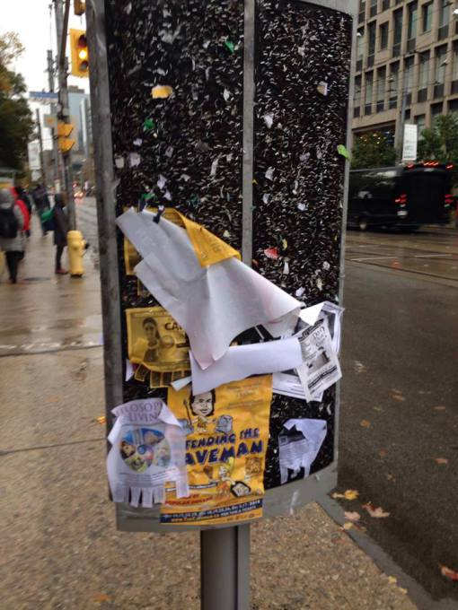
The second phase of Praxis I involves working with a team to find a design opportunity for campus service providers at the University of Toronto St. George campus, and develop a physical solution to that opportunity. This is a full iteration of the engineering design process, which involves framing, diverging, converging, and representing.
My team decided to improve the condition of Public Message Centres around campus to help with the advertising of campus service providers. As shown in the images below, the boards are often cluttered with old staples and posters, and there is no protection for the posters against the weather.
After directly engaging with stakeholders such as advertisers using these boards, as well as maintenance staff responsible for cleaning these boards, we decided that our solution would reduce leftover materials (e.g. staples, parts of old posters), offer protection of the posters against weather, and make it easy to use for advertisers. This, we believed, would maximize the benefit for our stakeholders. The result of our framing process is demonstrated in the Design Brief document.
My team developed possible solutions including using duotang clips, receipt holders, and plastic casings along with a circular roof. To reach all these ideas, we used various methods such as reverse brainstorming and lotus blossom technique (shown below). Reverse brainstorming is done by listing out the objectives, and coming up with ideas to address each one. Lotus blossom technique involves starting from a broad, central idea and stemming into smaller, more detailed ideas.


Reverse brainstorming (left) and lotus blossom technique (right)
To test and verify the designs against our requirements, we developed and conducted various testing protocols, such as the poster removal test, efficiency and time test, the wind test, and the water spray test (as shown below). The poster removal test measures the amount of leftover materials when a poster is quickly removed. The efficiency and time measures the time taken to properly put up a poster. The wind and water spray tests measure the amount of protection each design provides to the posters against varying weather conditions, in this case, wind and rain.

 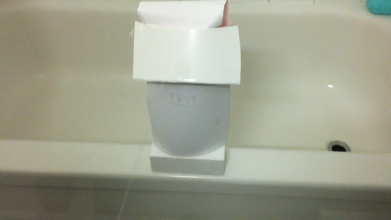
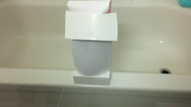
The results or snapshots of the efficiency and time test (left), wind test (middle), and water spray test (right)
In the end, we revealed that plastic casings along with a circular roof performed the best against all the metrics that we set, so we recommended this design. A more detailed showcase of our diverging and converging process in this project is available in the Design Recommendation report.
Overall, this design project is my first time iterating all the steps of the engineering design model (Frame, Diverge, Converge, Represent) introduced in Praxis. Through this exercise, I began to realize my strength in design areas such as a prototyping and testing protocols. From here, I slowly began to develop my personal engineering design process that helps me use my strengths and contribute the most to my team.
It also helped me learn and develop team-working skills, especially when working with a diverse team with members from different backgrounds, with varying strengths and weaknesses. In my opinion, the key of good teamwork is being able to combine the strengths of all team members and cover for each other's weaknesses. For me, it is a learning process to become a strong team player and leader.
References
1. E. Baik, Z. Cheng, M. Kemp, B. Sun. "Design Brief: Public Message Boards at U of T". W12. Rep. Oct. 2016.
2. E. Baik, Z. Cheng, M. Kemp, B. Sun. "Design Recommendation Report—Public Message Boards at U of T". W12. Rep. Dec. 2016.
Praxis II
Praxis II is a continuation of Praxis I, but with more emphasis on teamwork, stakeholder interaction, and validation of design. There are two stages to this course: first, finding a community in the Greater Toronto Area and propose a design opportunity through the Request for Proposal (RFP) document; second, selecting a RFP and develop a solution to the opportunity presented, and demonstrate the final design at the annual Engineering Science Praxis Showcase.
Phase 1: Request for Proposal
The first half of Praxis II is focused on identifying a community in the Greater Toronto Area, and frame a design opportunity through research and direct interaction with the community.
An important way of collecting evidence and documenting direct engagement with the community is writing field notes. In my field notes, I included summaries of interviews with the stakeholder, photos and observation notes of the site visit, online background research, and visuals I made to help me better understand the community.
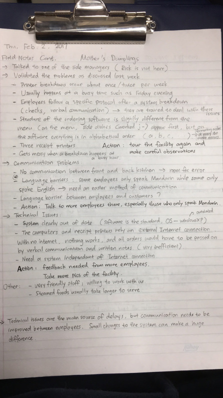


After visiting various communities, my team decided to work with Mother's Dumplings, a Chinese restaurant in Chinatown of downtown Toronto. Through interviews, site visits, and online research, we revealed that their ordering and serving system is unreliable, which causes in a lot of miscommunication, as well as loss of information. This results in the wrong dishes being served, long wait times for food to be served, and an increase in customer complaints.
Throughout the framing process, my team and I incorporated a lot of visuals to help us understand the community and their problems. Examples of this include a flowchart diagram of the service process at the restaurant, a diagram of the restaurant's physical layout, and a mind map of design requirements.
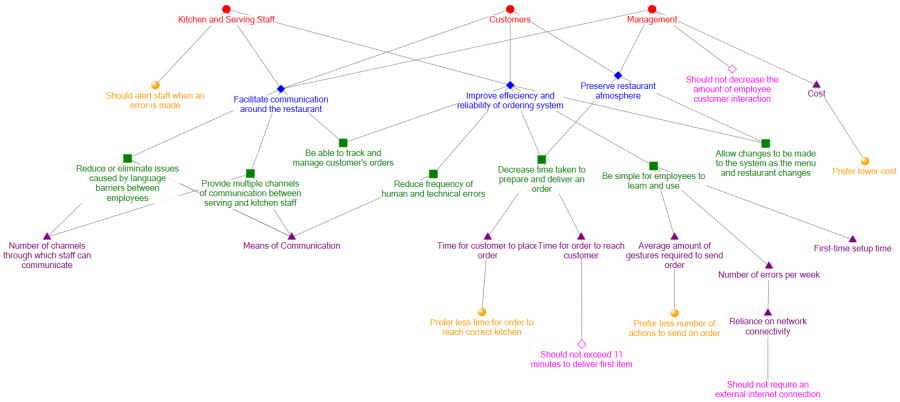
Using all the information we have, my team and I developed engineering design requirements (objectives, metrics, criteria, constraints), and stated upon what the design needs to accomplish. In our case, the final solution needs to reduce the amount of communication and serving errors, improve the ease of communication between employees, and shorten the average serving time of dishes at Mother's Dumplings. A more detailed demonstration of this iteration is available on the Request for Proposal (RFP) document.
From this experience, I learned about the importance of directly engaging with the stakeholders or the target community. In Praxis I, most of the information was gathered from research, however, research only provides secondary, background information and does not give any first-hand experiences of the stakeholders. In engineering design, it is crucial to know what the stakeholders need before designing a solution, and if no first-hand information is gathered, then the root causes of a problem involving the stakeholders cannot be clearly addressed. Stakeholder interaction provides most valuable information for this purpose, and it cannot be replaced by background research.
Phase 2: Designing a solution to a problem in the GTA
The second phase of Praxis II is centred around choosing a Request for Proposal, and developing a solution to the design opportunity addressed in the RFP.
My team decided to work on the RFP dealing with G & S Dye, a family-owned fabric shop in downtown Toronto. The Request for Proposal for this opportunity mentioned three areas of interest in regards to the fabric rolls present at G & S Dye: Cutting & measuring (dispensing), rolling, and storing the fabric.
We initially brainstormed on all three aspects, as shown below, but we thought that focusing on all aspects would be too wide of a scope, and we would not have the time and resources to address all the issues. So we decided to address the problem that the store employees have with rolling the fabric, in which a lot of time is wasted to correct any creases, wrinkles, and folds (errors) when rolling. It is also a strenuous task to roll the fabric as the fabric rolls can weigh up to 65 lbs.


Fig: Some individual and team divergence ideas
My team decided that our main objectives for rolling would be automation, minimizing rolling errors, and accommodating a variety of fabric roll sizes. Automation would put less stress on the employee's body while allowing them to perform other store duties. Minimizing rolling errors (creases, wrinkles, folds, and diagonal rolling) would allow the fabric rolls to be perfect condition when they are put in storage. Accommodation is needed as the fabric rolls come in different lengths and diameters.
For automation, we decided to use motors over other human powered methods (e.g. hand cranks, wheels) to power a roller that can be used to roll the fabric. To minimize errors, we chose to use rollers instead of wheels and other alternatives. And for accommodation, we initially decided to utilize the cutting table surface at G & S Dye, which allows for fabric rolls of varying lengths and diameters.
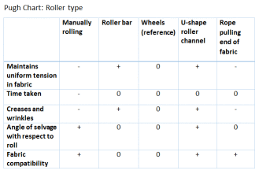
My team also developed a detailed testing protocol for all the metrics to ensure that our design would work properly and address the objectives.
However, when my team and I constructed our first prototype for the Beta Release, due to time and resource constraints, we had to use wheels as a representation of the rollers, and we did not construct a frame for all the components, meaning that we have to scatter all the elements around the table (as seen below). This caused a lot of errors when rolling the fabric, as the fabric roll is not being held steady when rolling.
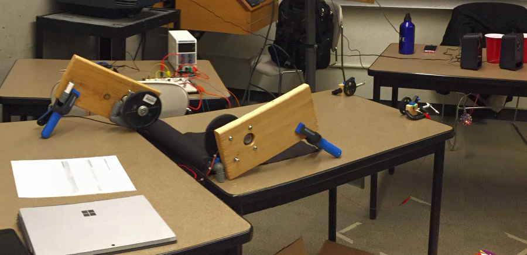After Beta Release, we learned that wheels would not work as rollers, and that a frame needs to be constructed to hold all the elements. We scrapped the original design and began to search for other ideas. When we came across a standard on fabric processing, we saw an image of a U-shaped industrial fabric rolling device (shown below) [1]. Inspired by this industrial design, we decided to scale it down in terms of size and cost to allow it to be implemented inside G & S Dye.
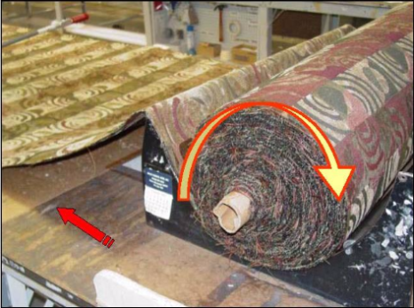
We modified this concept so that it has a set of rollers along the base of the U-shaped channel (or the "cradle"), and a roller from above held by a "swivel arm", with motors attached to it to automatically roll the fabric. The swivel arm can be moved back and forth to allow the fabric roll to be loaded and unloaded. This concept is not only small enough to be fit inside G & S Dye, it also meets all our objectives of automation, error reduction, and accommodation.
 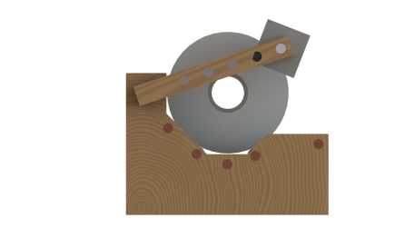
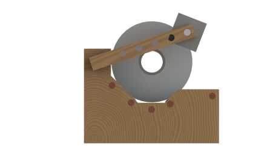 
For more information about our final design, you can take a look at our presentation poster and the one pager.
However, since my team did not have the resources to construct certain elements of the design, such as the swivel arm, we used a motor stand with a roller as a substitute. Also, the prototype is a scaled down version that is only about 1/5 of the designed width. So more improvements needed be made to our prototype before it can be fully implemented at G & S Dye. This functional representation of our design was made so testing could be done to see if the concept works.
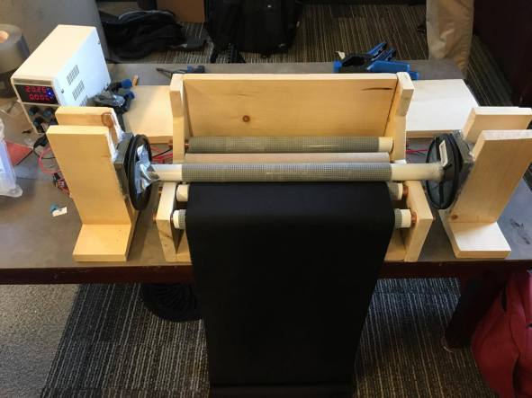Overall, this experience of working with a rigorous engineering design process brings me a step closer to being a professional engineer. I became more accustomed to the stress of meeting tight deadlines, making presentations, and working in a team setting with people that I did not know. Also, as you can see in my personal engineering design process, the experience of having to shift between design phases in Phase 2 of Praxis II really helped me develop the ability to readapt and reframe.
In addition, I learned about the importance of validation as it played a large role in this phase of Praxis II. From the multiple site visits that my team has conducted throughout the project, we learned about important information and received helpful feedback each time. For example, when we decided to reframe our objectives, we interviewed the stakeholders, who provided us with key information that was crucial to our decisions. Also, through the stages of building the prototype and upon its completion, we received feedback from the stakeholders which helped us refine our design concept and improve on the prototype.
As a professional engineer, it is crucial to address what the stakeholder needs and wants, and through continuous stakeholder interaction and validation, engineers can make sure that they stay on track with the objectives.
References
1. "Woven & Knit Residential Upholstery Fabric Standards & Guidelines". (2010). Joint Industry Fabric Standards Committee. Section 13
2. B. Sun, "Praxis II Field Notes: Improving Customer Service at Mother's Dumplings". Rep. Jan. 2017.
3. G. Hoyes, G. Lu, Z. Thawer, B. Sun. "Request for Proposal: Improving the Efficiency of the Service System at Mother's Dumplings,". W12. Rep. Feb. 2017.
4. G. Hoyes, G. Lu, Z. Thawer, B. Sun. "RFP G: Improving the Process of Preparing Fabric Orders at G&S Dye. TEST PLAN FOR PROTOTYPES". W12. Rep. Mar. 2017.
5. A. Detta, A. Gulab, J. Guo, J. Mao. "IMPROVING THE PROCESS OF PREPARING FABRIC ORDERS. REQUEST FOR PROPOSAL". W9. Rep. Mar. 2017.
6. G. Hoyes, G. Lu, Z. Thawer, B. Sun. "The Cradle: An Automated Fabric Roller for G & S Dye". W12. Rep. Mar. 2017.